Istanbul
Entre deux continents
Entre Bosphore, palais ottomans et bazars, découvre une ville unique entre l'Europe et l'Asie.
Traverse le Bosphore en quelques minutes et découvre deux continents dans une seule ville.
Admire palais, mosquées et quartiers historiques depuis l'un des plus beaux détroits du monde.
Balık ekmek, kebabs, meze, baklavas et salons de thé rythment chaque quartier de la ville.
Sainte-Sophie, la Mosquée Bleue, le palais de Topkapi et le Grand Bazar racontent des siècles d'histoire.
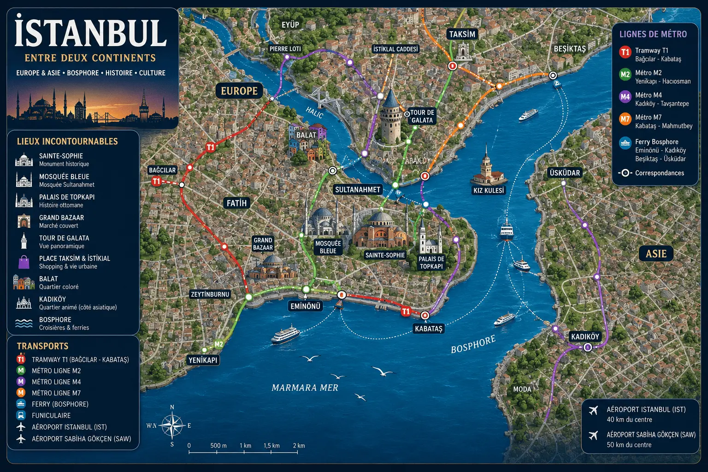
Istanbul ne se résume pas à ses mosquées ou à ses palais. Ici, chaque instant devient une expérience : naviguer entre deux continents au coucher du soleil, se détendre dans un hammam historique, créer son propre parfum, partager un dîner sur le Bosphore ou goûter les saveurs de deux cultures. Des souvenirs qui donnent à cette ville une atmosphère unique au monde.
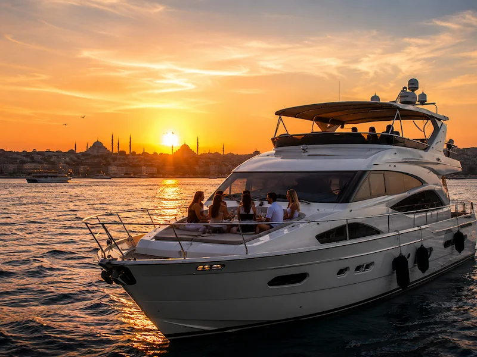
Lorsque les minarets s'illuminent et que le soleil disparaît derrière les palais ottomans, Istanbul dévoile l'un de ses plus beaux spectacles. Depuis un yacht, admire les deux continents se rejoindre au fil de l'eau dans une ambiance élégante et inoubliable.
🌅 Réserver la croisière →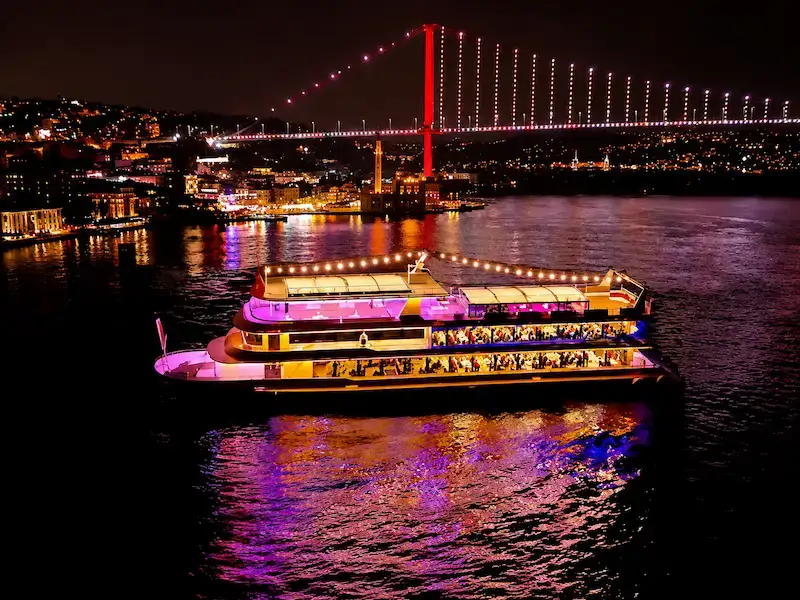
Profite d'une soirée entre gastronomie, musique traditionnelle et danses folkloriques pendant que les monuments emblématiques d'Istanbul défilent sous les lumières de la nuit. Une expérience romantique et festive au cœur du Bosphore.
🍽️ Réserver le dîner-croisière →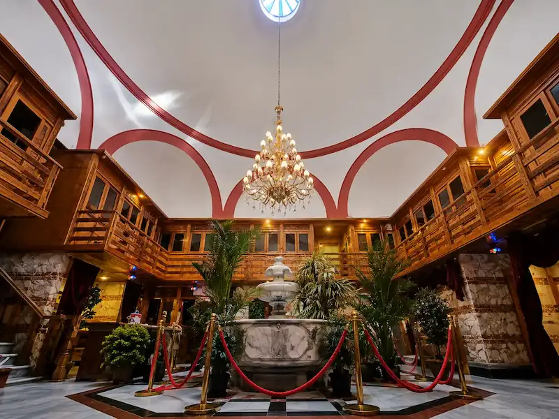
Entre vapeur, gommage traditionnel et massage relaxant, découvre un rituel transmis depuis des siècles. Dans un hammam historique d'Istanbul, le temps semble s'arrêter pour laisser place au bien-être et à la culture ottomane.
🛁 Réserver le hammam →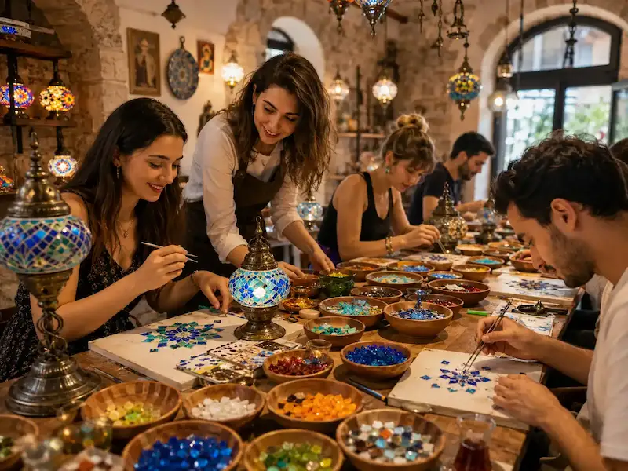
Assemble les couleurs et les motifs inspirés de l'art ottoman pour fabriquer une véritable lampe en mosaïque. Une activité conviviale qui permet de repartir avec un souvenir unique, créé de ses propres mains.
🎨 Réserver l'atelier →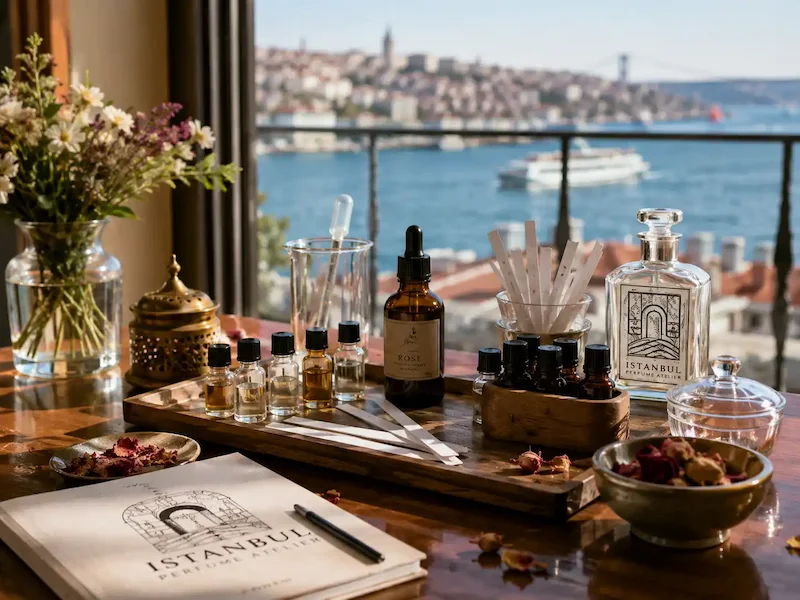
Laisse-toi guider parmi des dizaines d'essences inspirées des épices, des fleurs et des traditions orientales avant de repartir avec une création unique. Un souvenir personnel que tu continueras à porter bien après ton voyage.
🌸 Réserver l'atelier →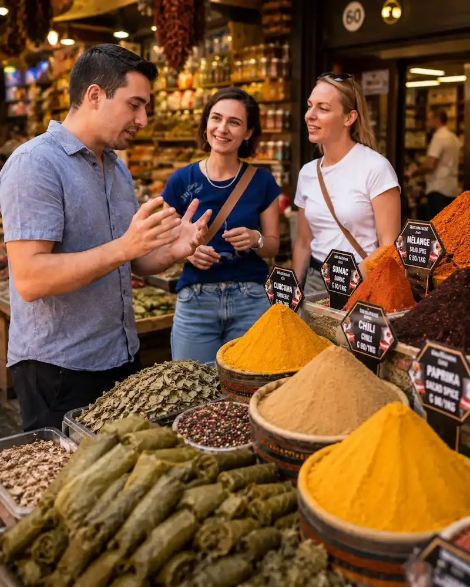
Traverse le Bosphore en ferry et découvre les marchés, les spécialités locales et les saveurs qui font la réputation d'Istanbul. Plus de vingt dégustations t'attendent entre l'Europe et l'Asie pour une immersion gourmande exceptionnelle.
🥙 Réserver le food tour →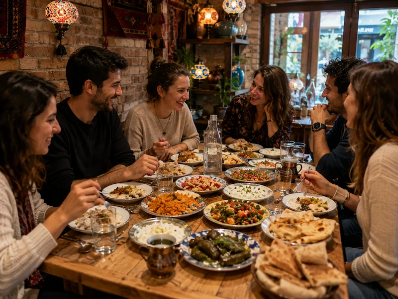
Prends de la hauteur pour savourer un dîner turc face aux coupoles et aux minarets illuminés. Entre cuisine locale, panorama spectaculaire et ambiance intimiste, cette soirée offre une autre vision d'Istanbul après le coucher du soleil.
🌇 Réserver la soirée →Entre métros modernes, tramways, ferries traversant le Bosphore et le tunnel Marmaray reliant l'Europe à l'Asie, Istanbul se découvre facilement sans voiture.
Le métro, le tramway T1 et le Marmaray permettent de rejoindre rapidement Sultanahmet, Galata, Taksim, Kadıköy ou Üsküdar.
Découvrir le réseau →L'Istanbulkart, disponible dans les principales stations de métro, permet d'utiliser le métro, les tramways, les bus, les ferries, le Metrobus et le Marmaray. C'est la solution la plus pratique et la plus économique pour explorer Istanbul.
Les ferries font partie du quotidien des habitants et offrent l'une des plus belles façons d'admirer Istanbul depuis l'eau. Une traversée entre l'Europe et l'Asie devient ici une expérience à part entière.
Voir les lignes de ferry →Après un long vol, un transfert privé permet de rejoindre facilement votre hébergement sans attendre un taxi ni chercher les transports. Une solution confortable, particulièrement appréciée lors d'une première découverte d'Istanbul.
Réserver le transfert →Le quartier idéal pour un premier séjour à Istanbul. Sainte-Sophie, la Mosquée Bleue, la Citerne Basilique et le palais de Topkapi se rejoignent facilement à pied, dans une atmosphère chargée d'histoire.
Autour de sa célèbre tour, Galata mêle ruelles pentues, cafés élégants, galeries et vues spectaculaires sur la Corne d'Or. Un excellent choix pour profiter d'un Istanbul vivant, créatif et central.
Le cœur moderne et animé de la ville. Entre l'avenue Istiklal, les rooftops, les restaurants, les bars et les salles de spectacle, ce secteur convient parfaitement aux voyageurs qui aiment sortir et vivre Istanbul jusqu'à tard.
Un quartier tendance au bord du Bosphore, apprécié pour ses cafés design, ses bonnes adresses, ses hôtels élégants et sa proximité avec Galata. L'ambiance y est jeune, urbaine et particulièrement agréable.
Sur la rive asiatique, Kadıköy offre une atmosphère plus locale, entre marchés, restaurants, bars, ferries et promenades au bord de l'eau. Une excellente option pour vivre Istanbul autrement, loin des zones les plus touristiques.
Au bord du Bosphore, ces quartiers séduisent par leur énergie, leurs terrasses, leurs palais et leurs vues sur le pont. Un choix idéal pour profiter d'un séjour élégant, vivant et proche de l'eau.
Des hôtels historiques de Sultanahmet aux adresses élégantes de Karaköy, en passant par l'énergie de Taksim, les vues sur le Bosphore ou l'ambiance locale de Kadıköy, Istanbul propose une grande diversité de quartiers pour imaginer un séjour à votre image.
Entre les tavernes animées, les terrasses dominant le Bosphore, les marchés parfumés aux épices et les cafés centenaires, Istanbul se découvre aussi à table. Ici, chaque repas raconte une histoire, entre traditions ottomanes et influences venues des deux continents.
Prendre de la hauteur est l'une des plus belles façons d'admirer Istanbul. Face aux coupoles, aux minarets et au Bosphore illuminé, un dîner sur un rooftop transforme une simple soirée en souvenir inoubliable.
🌇 Réserver l'expérience →Safran, loukoums, thés, fruits secs, pistaches et parfums d'Orient... Le marché aux Épices est une véritable invitation au voyage et l'un des lieux les plus gourmands de la ville.
Découvrir le marché →Rien n'égale un dîner face au détroit pendant que les ferries traversent le Bosphore. Poissons grillés, mezzés et coucher du soleil composent l'une des plus belles expériences culinaires d'Istanbul.
Découvrir Lacivert →Prends le temps de savourer un véritable café turc accompagné d'un loukoum dans un établissement historique. Une pause incontournable pour découvrir une tradition inscrite au patrimoine culturel immatériel de l'UNESCO.
Découvrir Mehmet Efendi →Installe-toi autour d'une table garnie de mezzés, de poissons frais et de spécialités turques dans une meyhane traditionnelle. Entre musique, convivialité et partage, c'est l'une des expériences les plus authentiques d'Istanbul.
Découvrir Asmalı Cavit →Capitale de trois empires, Istanbul dévoile un patrimoine exceptionnel où palais impériaux, mosquées majestueuses, bazars centenaires et trésors souterrains racontent plus de deux mille ans d'histoire. Ces lieux emblématiques font partie des visites à ne pas manquer lors d'un premier séjour.
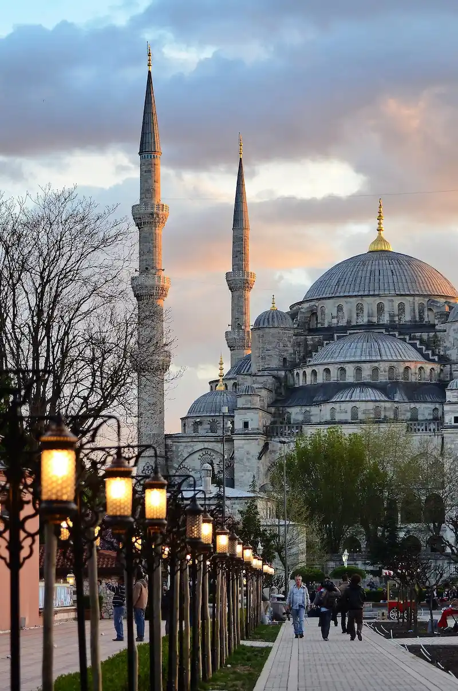
Découvre les deux monuments les plus emblématiques d'Istanbul avant de parcourir les ruelles historiques de Sultanahmet. Une immersion fascinante au cœur des héritages byzantin et ottoman.
🕌 Explorer la vieille ville →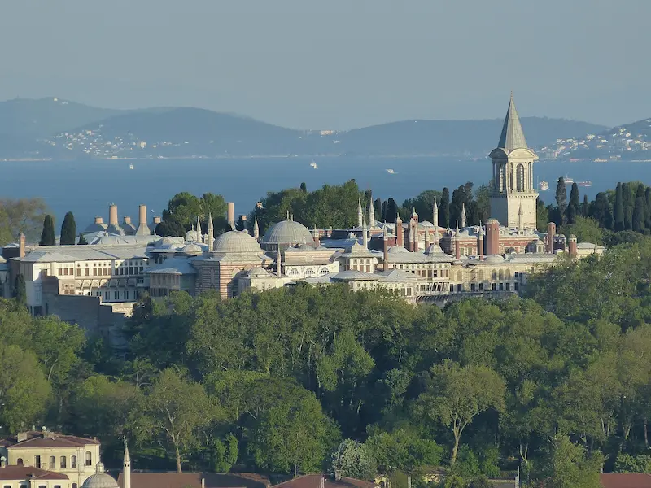
Résidence des sultans pendant près de quatre siècles, Topkapi dévoile ses cours, ses jardins, son trésor impérial et le célèbre Harem, véritable symbole de la puissance ottomane.
🏰 Découvrir le palais →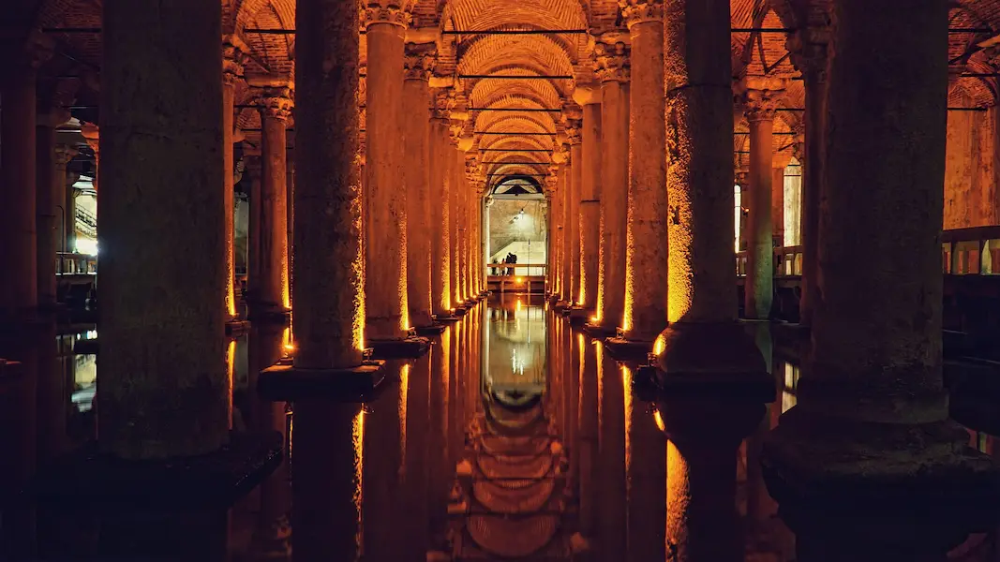
Sous les rues d'Istanbul se cache un univers mystérieux composé de centaines de colonnes antiques, d'une lumière tamisée et des célèbres têtes de Méduse. Une visite aussi surprenante que spectaculaire.
💧 Visiter la citerne →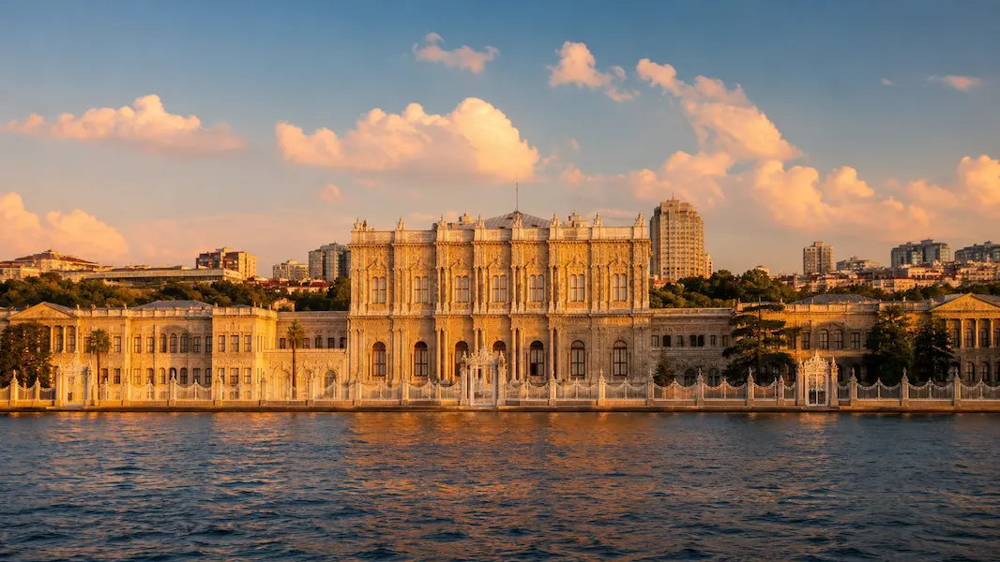
Construit au bord du Bosphore, ce palais impressionne par ses salons fastueux, ses lustres monumentaux et son architecture mêlant influences européennes et ottomanes. Un véritable joyau du XIXᵉ siècle.
👑 Explorer Dolmabahçe →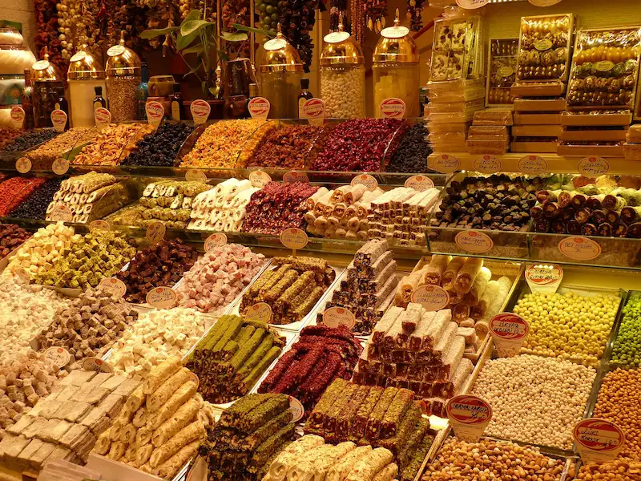
Explore les passages secrets, les cours cachées et les toits du Grand Bazar lors d'une visite originale qui révèle l'un des plus anciens marchés couverts du monde sous un tout nouvel angle.
🛍️ Explorer le Grand Bazar →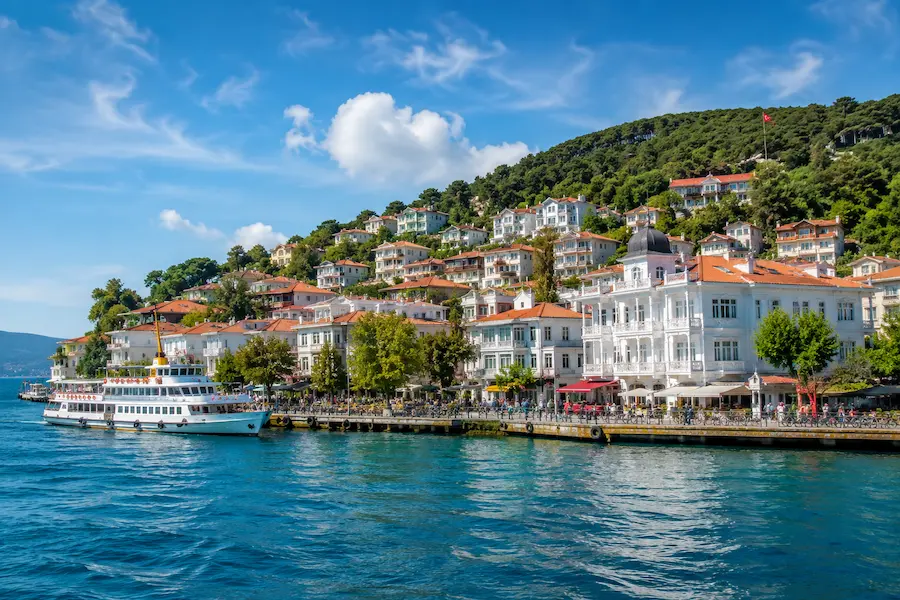
À seulement quelques kilomètres d'Istanbul, les îles des Princes offrent un véritable bol d'air entre villas historiques, criques, pinèdes et promenades au bord de la mer de Marmara. Une escapade idéale pour découvrir une autre facette de la ville.
⛴️ Découvrir les îles →À Istanbul, le sport est bien plus qu'un spectacle : c'est une véritable passion. Entre les tribunes enflammées de Galatasaray, l'atmosphère unique de Beşiktaş, les supporters de Fenerbahçe sur la rive asiatique et les grandes soirées d'EuroLeague, la ville fait vibrer des millions de fans tout au long de l'année.
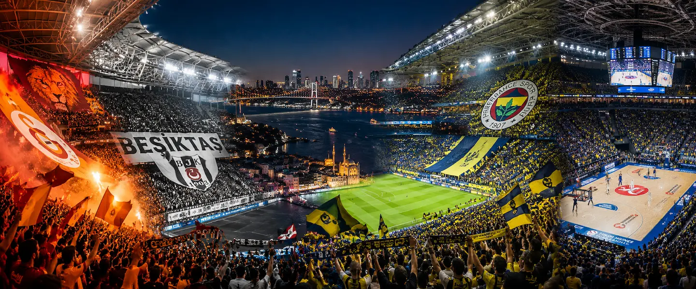
Le RAMS Park est réputé pour offrir l'une des plus grandes ambiances du football européen. Les chants des supporters et les grands soirs de derby transforment chaque rencontre en véritable spectacle.
🦁 Site officiel →Au Tüpraş Stadium, les supporters de Beşiktaş créent une atmosphère électrique face au Bosphore. L'intensité des tribunes fait de chaque match une expérience inoubliable.
🦅 Site officiel →Sur la rive asiatique, Fenerbahçe rassemble des supporters parmi les plus passionnés de Turquie. Découvrir un match au stade Şükrü Saracoğlu permet de vivre une autre facette du football stambouliote.
💛💙 Site officiel →Istanbul est l'une des places fortes du basket européen. Les rencontres d'EuroLeague, notamment celles d'Anadolu Efes ou de Fenerbahçe Beko, offrent un niveau de jeu exceptionnel et une ambiance impressionnante.
🏀 Site officiel →Istanbul est une formidable porte d'entrée vers d'autres trésors de la Turquie. En une journée ou le temps d'un court séjour, découvre des îles paisibles, des montagnes, des sites historiques majeurs ou les paysages féeriques de la Cappadoce. Autant d'expériences qui complètent parfaitement un voyage dans la plus grande ville du pays.
À quelques kilomètres d'Istanbul, les îles des Princes offrent une parenthèse paisible entre villas historiques, balades au bord de la mer, restaurants de poissons et ruelles sans circulation. Une excursion idéale pour ralentir le rythme.
🏝️ Découvrir les îles →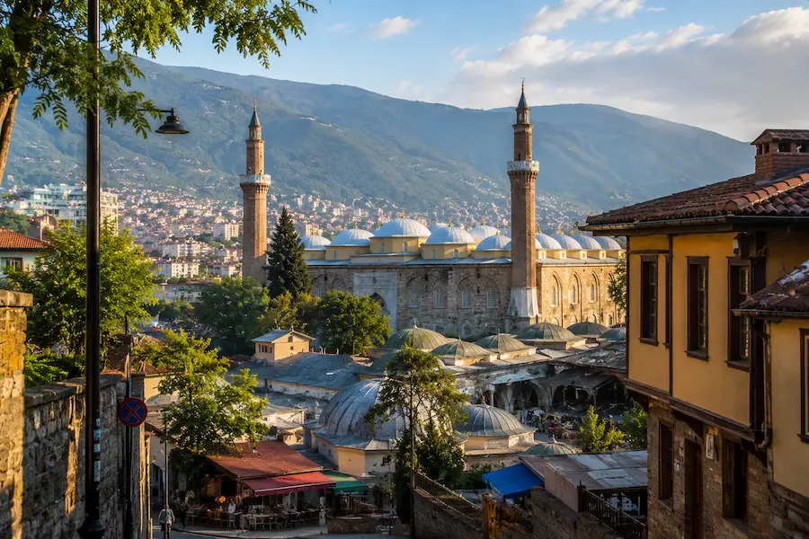
Pars à la découverte de l'ancienne capitale ottomane, visite ses monuments historiques puis prends de la hauteur grâce au téléphérique offrant de magnifiques panoramas sur le mont Uludağ.
🏔️ Explorer Bursa →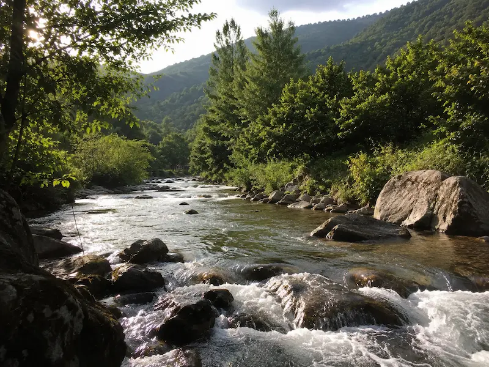
Entre lac, cascades, forêts verdoyantes et villages paisibles, cette escapade est parfaite pour s'offrir une journée au grand air et découvrir une Turquie plus naturelle, loin de l'agitation d'Istanbul.
🌿 Découvrir l'excursion →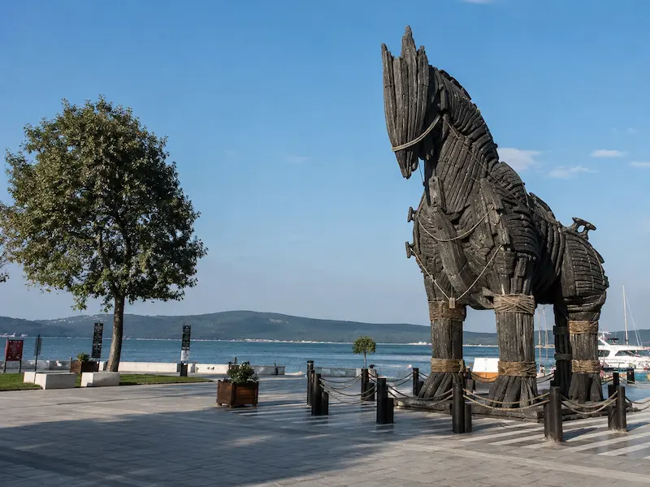
Remonte le temps à travers deux lieux emblématiques de l'histoire. Entre les champs de bataille de Gallipoli et les vestiges de la mythique cité de Troie, cette excursion de deux jours promet un voyage passionnant.
🏺 Explorer Gallipoli & Troie →Complète ton séjour par deux jours au cœur de l'une des plus belles régions de Turquie. Vallées sculptées, villes troglodytiques et montgolfières au lever du soleil offrent une expérience absolument inoubliable.
🎈 Découvrir la Cappadoce →Le turc est la langue officielle. L'anglais est assez répandu dans les hôtels, les restaurants et les quartiers touristiques, mais apprendre quelques mots comme « merhaba » ou « teşekkürler » facilite souvent les échanges.
La monnaie locale est la livre turque. La carte bancaire est largement acceptée, mais conserve un peu d'argent liquide pour les petits commerces, les marchés, certains cafés et les rechargements de transport.
Métro, tramway, Marmaray et ferries permettent d'éviter une grande partie des embouteillages. Une Istanbulkart rechargeable simplifie les déplacements et permet de passer facilement d'une rive à l'autre.
Quatre à cinq jours permettent d'explorer les monuments de Sultanahmet, les quartiers de Galata et Karaköy, la rive asiatique et le Bosphore sans transformer le séjour en course permanente.
Le printemps et le début de l'automne offrent généralement les conditions les plus agréables pour marcher, naviguer sur le Bosphore et profiter des terrasses. L'été peut être chaud et très fréquenté.
Une tenue couvrant les épaules et les jambes est recommandée pour entrer dans les mosquées. Les chaussures doivent être retirées et un foulard peut être demandé aux femmes dans certains lieux de culte.
Privilégie les stations officielles, les taxis commandés par ton hébergement ou les applications reconnues. Vérifie que le compteur est activé et suis l'itinéraire pour éviter les détours inutiles.
Istanbul est immense et les embouteillages peuvent rallonger fortement les trajets. Regroupe les visites par quartier et privilégie le tramway, le métro, le Marmaray ou les ferries.
Les mosquées restent des lieux de culte actifs et peuvent fermer temporairement aux visiteurs pendant les prières. Prévois une tenue adaptée et respecte le calme des fidèles.
La négociation fait partie de l'expérience dans de nombreuses boutiques du Grand Bazar. Compare les offres, garde le sourire et n'achète que si le prix et la qualité te conviennent réellement.
Le centre historique est pratique, mais les quartiers de Kadıköy, Karaköy, Beşiktaş et Balat dévoilent une scène culinaire plus variée, locale et souvent plus intéressante.
Limiter son séjour à la rive européenne fait manquer une part essentielle d'Istanbul. Kadıköy, Moda et Üsküdar offrent des marchés, des cafés, des promenades et une atmosphère plus quotidienne.
Quatre à cinq jours constituent une bonne durée pour explorer les principaux monuments, naviguer sur le Bosphore, découvrir plusieurs quartiers et passer quelques heures sur la rive asiatique.
Sultanahmet convient aux voyageurs souhaitant dormir près des grands monuments. Karaköy et Galata offrent davantage de restaurants et d'animation, tandis que Kadıköy permet de vivre une ambiance plus locale.
Oui. Le métro, le tramway, les ferries et le Marmaray desservent efficacement les principaux quartiers. La voiture est généralement déconseillée en raison de la circulation et du stationnement.
Oui. Les ferries et le Marmaray permettent de traverser le Bosphore rapidement. Le ferry reste l'option la plus agréable pour admirer la silhouette d'Istanbul depuis l'eau.
Il est préférable d'anticiper les visites de Sainte-Sophie, du palais de Topkapi, de Dolmabahçe et de la Citerne Basilique, surtout pendant les week-ends et les périodes de forte fréquentation.
Oui. Les traversées en ferry, les palais, les parcs, les ateliers artisanaux et les îles des Princes offrent de nombreuses expériences adaptées aux familles. Les poussettes peuvent toutefois être moins pratiques dans les ruelles pentues et très fréquentées.
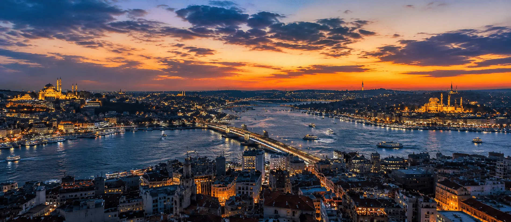